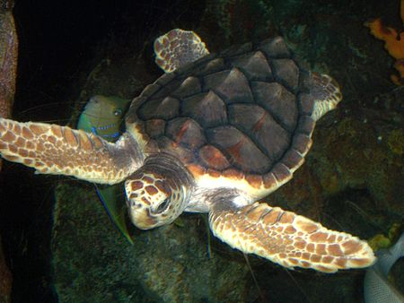

EPEPC
Inici
Llistat
Contacta
Espècies en perill d'extinció als Països Catalans
Top 3 Espècies
Tortuga Babaua - Caretta Caretta

Estat de conservació
Vulnerable
Població
Decreixent
Lludria - Lutra Lutra
Estat de conservació
Gairebé amenaçada
Població
Decreixent
Ratpenat de ferradura mitjà - Rhinolophus mehelyi
Estat de conservació
Vulnerable
Població
Decreixent